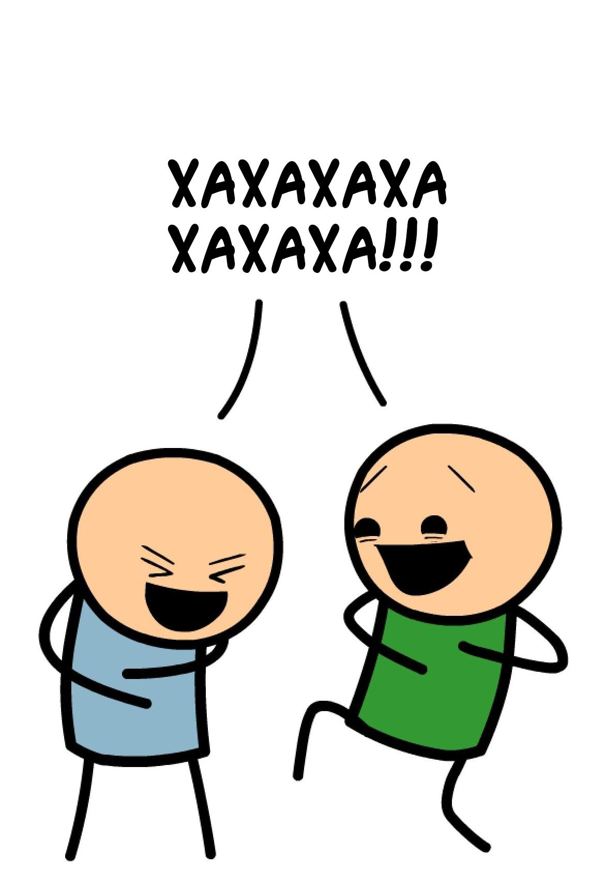

Каждый игрок получает по 7 карточек. Не прибегая к насилию, рандомно
выбирают
первого судью.
Первую карту выбирает судья. Это изначальная панель комикса.

Остальные игроки кладут свои карты лицом вниз, создавая следующую панель (панчлайн) комикса.Судья выбирает более понравившийся вариант. Выигравший
игрок
получает
одно очко.
Каждый игрок получает по одной карте (их всегда должно быть 7). Следующий реальный игрок
становится
судьёй.
Игра заканчивается когда все реальные игроки побывали судьями